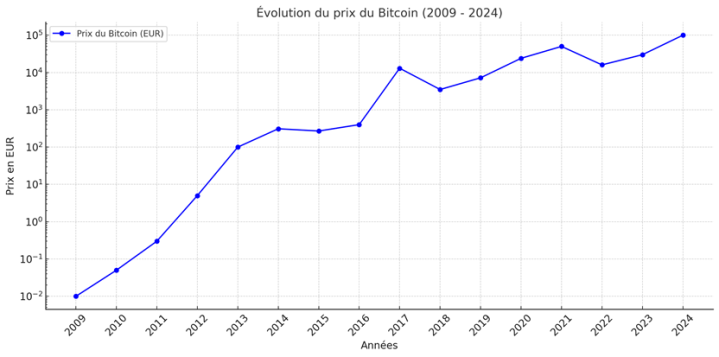
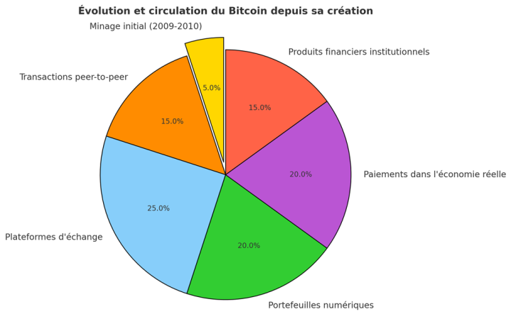

Création et circulation du Bitcoin
Création :
Le Bitcoin (BTC), première et plus emblématique des crypto-monnaies, a vu le jour en janvier 2009 sous l'impulsion du mystérieux Satoshi Nakamoto. Aujourd'hui, près de 19,814,531.00 BTC sont en circulation, pour un prix actuel de 100,022.57 € par unité. Sa rareté, due à une limite fixe de 21 millions de BTC, en fait un actif convoité. Symbole d'une révolution financière et technologique, le Bitcoin s'inscrit dans une lignée d'innovations portées par les Cypherpunks. Ce mouvement visionnaire, né dans les années 1990, rassemblait informaticiens, mathématiciens et universitaires déterminés à protéger la vie privée et la liberté individuelle face à la surveillance croissante des États et à l'expansion du numérique. À travers la cryptographie, ils entendaient garantir des droits fondamentaux : la communication anonyme, l'accès à l'information et la liberté des transactions. Leurs échanges, souvent animés via des listes de diffusion sur Internet, ont donné naissance à des idées audacieuses et aux bases des technologies révolutionnaires comme le Bitcoin. Aujourd'hui, l'essor du Bitcoin et le succès d'initiatives comme l'ETF Bitcoin de BlackRock témoignent de l'héritage puissant laissé par cette vision libertaire et technologique.
Circulation :
Le Bitcoin circule à travers un réseau décentralisé basé sur la technologie blockchain, un registre numérique transparent et immuable qui enregistre toutes les transactions. Créé en 2009 par le mystérieux Satoshi Nakamoto, le Bitcoin a d'abord été distribué via un processus de minage, où des participants utilisaient la puissance de calcul de leurs ordinateurs pour résoudre des équations complexes en échange de récompenses en bitcoins. À l'époque, un simple ordinateur personnel suffisait pour participer à ce processus. Grâce à sa conception sans intermédiaire, le Bitcoin permet des transactions peer-to-peer, c'est-à-dire directement entre individus. Ces échanges sont vérifiés par des nœuds du réseau avant d'être ajoutés à la blockchain, offrant ainsi un moyen rapide, sécurisé et sans frontières de transférer de la valeur. Avec le temps, la popularité croissante du Bitcoin a favorisé l'émergence de plateformes d'échange telles que Coinbase, Binance ou Kraken. Ces plateformes permettent d'acheter, de vendre ou d'échanger des bitcoins contre des devises traditionnelles ou d'autres crypto-monnaies, facilitant leur circulation dans l'économie mondiale. Parallèlement, des portefeuilles numériques ont été développés pour simplifier l'accès au Bitcoin. Ces portefeuilles, qu'ils soient mobiles, logiciels ou matériels, permettent aux utilisateurs de gérer leurs fonds et de les transférer facilement, tout en offrant une sécurité renforcée grâce aux clés privées. Le Bitcoin s'est progressivement intégré dans l'économie réelle. De nombreuses entreprises, comme Microsoft ou Tesla, ainsi que des commerçants dans divers secteurs, acceptent désormais le Bitcoin comme moyen de paiement. Cette adoption a permis à la crypto-monnaie de se positionner à la fois comme un moyen d'échange et une réserve de valeur. Par ailleurs, l'intérêt des institutions financières a donné naissance à des produits comme les ETF Bitcoin, qui permettent d'investir dans cet actif sans le détenir directement. Cela a contribué à son intégration au sein des marchés financiers traditionnels. Aujourd'hui, le Bitcoin circule dans un écosystème diversifié : il est utilisé pour des paiements entre particuliers, des échanges sur des plateformes décentralisées, des investissements via des produits dérivés, et même dans des transactions légales ou illégales en raison de l'anonymat relatif qu'il procure. En tant que première crypto-monnaie, le Bitcoin reste au cœur de la révolution numérique, reliant technologie, économie et finance dans un réseau global sans précédent.
